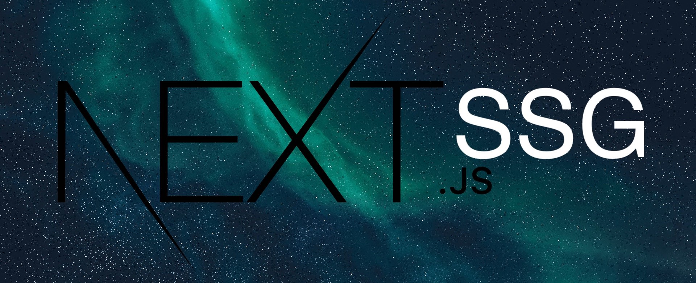

You know Next.js, right? - If not, stop reading this article and make something else.
If you're using Next.js 13 with app directory, have a look at this blog post.
Next.js is awesome! It gives you the best developer experience with all the features you need...
TOC
- BUT, you may have heard about this
- So what can we do now?
- The recipe
- The outcome
- The voluntary part
- üéâü•≥ Congratulations üéäüéÅ
BUT, you may have heard about this:
Error: i18n support is not compatible with next export. See here for more info on deploying: https://nextjs.org/docs/deployment
This happens if you're using the internationalized routing feature and are trying to generate a static HTML export by executing next export.
Well, this features requires a Node.js server, or dynamic logic that cannot be computed during the build process, that's why it is unsupported.
This is the case if you're using next-i18next for example.
So what can we do now?

An obvious option is, to renounce to the static HTML export and use a Node.js server or Vercel as deployment environment.
But sometimes, due to company or architectural guidelines it is mandatory to use a static web server.
Ok then renounce to i18n? - Not really, if we are here, it seems like to be a requirement.
So then do it without Next.js? - But this usually means to rewrite the whole project.
Executing next export when not using i18n seems to work.
What if we do not try to use the internationalized routing feature and do the i18n routing on our own?
The recipe
To "cook" this recipe you will need the following ingredients:
- use the dynamic route segments feature
- willingness to change the structure of your project files
- willingness to adapt a bit of code
- a logic to detect the user language and redirect accordingly
Sounds feasible. Let's start!
1. Remove the i18n options from next.config.js.
1 | - const { i18n } = require('./next-i18next.config') |
2. Create a [locale] folder inside your pages directory.
a) Move all your pages files to that folder (not _app.js or _document.js etc..).
b) Adapt your imports, if needed.
3. Create a getStatic.js file and place it for example in a lib directory.
1 | import { serverSideTranslations } from 'next-i18next/serverSideTranslations'; |
4. Use getStaticPaths and makeStaticProps in your pages, like this:
1 | import { useTranslation } from 'next-i18next' |
5. Install next-language-detector.
npm i next-language-detector
6. Create a languageDetector.js file and place it for example in the lib directory.
1 | import languageDetector from 'next-language-detector' |
7. Create a redirect.js file and place it for example in the lib directory.
1 | import { useEffect } from 'react' |
8. For each of your pages files in your [locale] directory, but especially for the index.js file, create a file with the same name with this content:
1 | import { Redirect } from '../lib/redirect' |
9. Create a Link.js component and place it for example in the components directory.
1 | import React from 'react' |
10. Replace al next/link Link imports with the appropriate ../components/Link Link import:
1 | - import Link from 'next/link' |
11. Add or modify your _document.js file to set the correct html lang attribute:
1 | import Document, { Html, Head, Main, NextScript } from 'next/document' |
12. In case you have a language switcher, create or adapt it:
1 | // components/LanguageSwitchLink.js |
1 | // components/Footer.js |
The outcome
If you now start your project (next dev) you should see, more or less, the same behaviour as before.
So what's the benefit?
Try: next build && next export
You should see something like this at the end:
1 | ● (SSG) automatically generated as static HTML + JSON (uses getStaticProps) |
Yeah no i18n support is not compatible with next export error anymore!!!
Congratulations! Now you can "deploy" the content of your out directory to any static web server.
üßë‚Äçüíª The complete code can be found here.
The voluntary part

Connect to an awesome translation management system and manage your translations outside of your code.
Let's synchronize the translation files with locize. This can be done on-demand or on the CI-Server or before deploying the app.
What to do to reach this step:
- in locize: signup at https://locize.app/register and login
- in locize: create a new project
- in locize: add all your additional languages (this can also be done via API)
- install the locize-cli (
npm i locize-cli)
Use the locize-cli
Use the locize sync command to synchronize your local repository (public/locales) with what is published on locize.
Alternatively, you can also use the locize download command to always download the published locize translations to your local repository (public/locales) before bundling your app.
üéâü•≥ Congratulations üéäüéÅ
I hope you’ve learned a few new things about static site generation (SSG), Next.js, next-i18next, i18next and modern localization workflows.
So if you want to take your i18n topic to the next level, it's worth trying the localization management platform - locize.
The founders of locize are also the creators of i18next. So by using locize you directly support the future of i18next.
üëç
Looking for an optimized Next.js translations setup?
 Here you'll find a blog post on how to best use next-i18next with client side translation download and SEO optimization.
Here you'll find a blog post on how to best use next-i18next with client side translation download and SEO optimization.